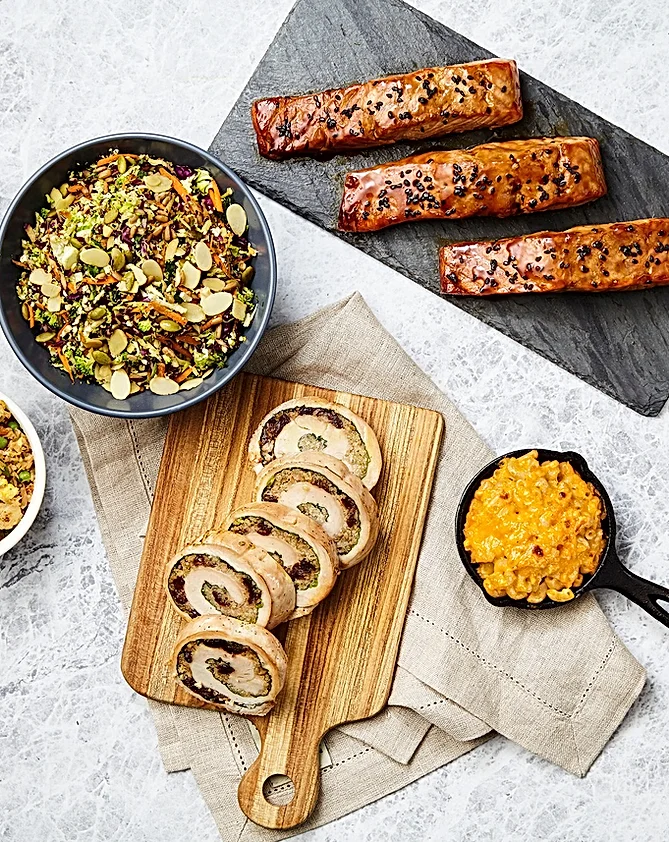

Hi There 🖐️
Welcome To recipe page
Explore our curated collection of mouthwatering recipes and embark on a flavorful journey like no other
Welcome to my page!
We're passionate food enthusiasts dedicated to sharing mouthwatering recipes and culinary inspiration with fellow foodies. Our love for cooking drives us to explore diverse cuisines, experiment with unique flavors, and create delicious dishes that bring joy to the table. Join us on this flavorful journey as we share our favorite recipes, cooking tips, and stories from the kitchen. Let's savor every moment and celebrate the joy of cooking together!Blueberry Smoothie
Ingredients
- 1 cup ice cubes
- 1 medium banana (approximately 6 inches long), sliced and frozen
- 1/2 cup frozen blueberries (not thawed)
- 1 container (8 ounces) nonfat, artificially sweetened vanilla yogurt
- 1/4 cup skim milk
Instructions
- Step 1:
Place ice cubes at the bottom of the blender. - Step 2:
Add banana slices, blueberries, yogurt, and milk. Cover and blend in pulses until smooth, stopping frequently to stir down the ice. - Step 2:
Serve right away. Freeze leftovers in an airtight, microwave-safe container and thaw in the microwave until slushy.
Banana Oats Pancakes
Ingredients
- 2 ripe bananas
- 1 1/2 cup of oats
- 1 tsp of salt
- 1 tsp of vanilla extract
- 1/2 cup of milk of choice
- 1 egg
- 3 tsp of butter or oil to spray pan
- Brown sugar
Instructions
- Step 1:
Pulse oats in a blender for 5-10 seconds then place in large bowl. - Step 2:
In a small bowl, mash banana with a fork until mixed in a semi-creamy texture. Place to the side. - Step 3:
Add vanilla extract, egg, brown sugar, salt, and milk in a separate bowl. Add the combined mixture to the mashed banana in the large bowl. Stir well. - Step 4:
Preheat skillet to medium-high heat. - Step 5:
Scoop out banana oat mixture in the skillet. Cook each side until you see the edges turn brown.